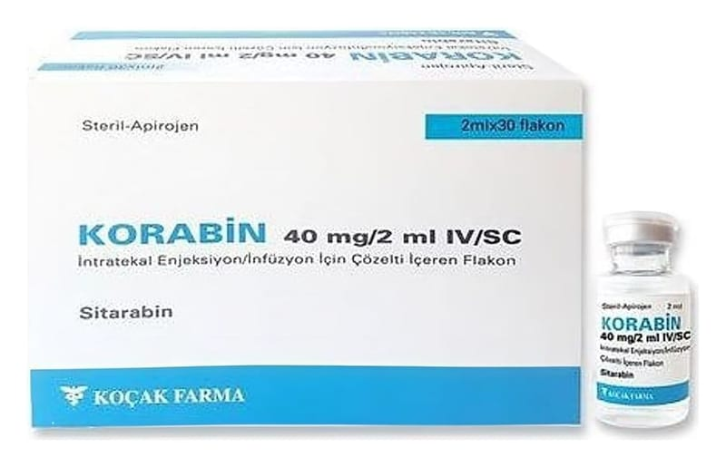

Korabin 40 mg/2 ml IV/SC Intratekal Enjeksiyon/İnfüzyon İçin Çözelti İçeren Flakon ,30 Adet

Ne için kullanılır
KT · Bölüm 1KORABİN renksiz ve berrak çözeltidir. Her biri, 2 mL izotonik çözelti içinde 40 mg sitarabin içeren 30 flakonluk ambalajda bulunur. KORABİN kanser tedavisinde kullanılan bir ilaçtır. KORABİN tek başına kullanılmakla beraber daha çok diğer kanser ilaçları ile birlikte kullanılmaktadır.
KORABİN yetişkinlerde ve çocuklarda aşağıda özel isimleri ile belirtilen çeşitli kanser tiplerinin tedavisinde kullanılır: • Farklı türdeki lösemiler (akut myeloid lösemi (AML), akut lenfoblastik lösemi (ALL), kronik myeloid lösemi (KML)) • Farklı tipteki lenfomalar (non-Hodgkin lenfomalar)